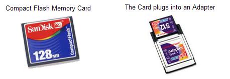
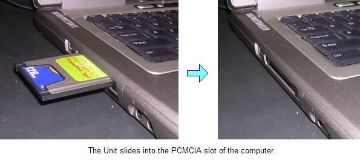

OurWord Help
Automatically
backing up files
OurWord offers a behind-the-scenes backup feature, that silently creates and archives backups during the course of daily usage without the user needing to do anything. A command in the Tools dropdown allows a backup file to be restored.
The Backup Challenge
The Backup Destination
Turning On Auto-Backup
Restoring a File
Program Behavioral Notes
The Backup Challenge |
Backing up data has been a problem since the first days people began using computers. The problems include:
If you have been using a computer for very long, it is likely that either you personally or someone you know has lost significant work due to the lack of a backup. We have observed that new users especially find that making backups is challenging, largely because of the difficulties in file management.
OurWord has a behind-the-scenes solution. Other than an initial setup in which a destination is chosen, the user is not bothered about backup again.
The Backup Destination |
The destination for these backups needs to be a device that can be written many times. OurWord updates the backup every time the file is saved (which it does automatically every 10 minutes). Thus a CD is not acceptable, because a new CD would need to be inserted every 10 minutes (which most people would find both annoying and expensive!)
We highly recommend that you use a flash memory device installed in the PCMCIA slot of your computer.

As of March 2008, a 2Gig Compact Flash Card can be purchased for $US 25.00 (e.g., see Vendor Example). It plugs into an Adapter (roughly US $8) (Note: I have no experience with this vendor; it is an example only!)
As shown below, the Card/Adapter Unit slides into the computer, and for all practical purposes becomes conveniently part of the machine. If the translator brings the computer to a workshop, the card is there. When the translator returns to his home, the card is there. Backups thus can continue uninterrupted, no matter where the laptop travels.

Once installed, the memory device appears as a drive in Windows Explorer, e.g., "E:\". Files on it can be manipulated through Explorer in the same manner as other devices such as the hard disk.
Turning On Auto-Backup |
In order to turn on Auto-Backup, use the Configuration Dialog. There are two settings there:
As mentioned above, we recommend that the folder be flash memory installed in the PCMCIA slot. In the absence of a suitable device, you can elect to identify a folder on your hard disk. This is better than nothing (but just barely), as it does protect you should want to undo the changes you made recently. But it does not protect you from a hard disk failure, which is a real risk in many of the climates and electrical power situations in which translation is typically done..
Restoring a File |
A file is restored through the Restore from Backup command on the Tools dropdown. The command brings up the Restore from Backup Dialog. In this dialog, you browse through a list of files to choose the one to restore from.
Program behavioral notes |
When OurWord saves changes, it also creates a backup. The backup files all have the day's date in the filename, thus:
Only one backup file is created for a given day. Thus a file might be saved many times during the course of the day; but the backup file only represents the contents of the most recent save.
If you work on the same book for many days, you will find that you are producing a large number of backup files. In order to keep the number of files down, OurWord discards some of the older files, as follows:
Thus if you edit the same book every day for an entire year, rather than 365 backup files, you will have
For a book like Luke that weighs in at 400K, this would occupy 12 Meg on the storage device.
Of course, you are encouraged to delete files from the storage device, or to move them periodically to a CD Rom, where they can serve as a more permanent archive. (This Backup feature does not pretend to function as a permanent archive.)
Updated as of Version 1.0.